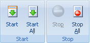
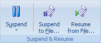

Use the Download tab to start/stop Project downloads.

Start - starts downloading the selected Project or Folder. It uses the "File Modification Check" settings of the Project to update or, download all files or get missing files.
Start All - starts downloading all Projects in Portable Offline Browser. Warning - this may cause a temporary hangup of the Portable Offline Browser. Also, if you have many projects, this may result in too much memory used by Portable Offline Browser.
Stop - stops downloading the selected Project immediately.
Stop All - stops all active downloads.

Restart Download - starts downloading the selected Project with the "Download all files" setting of the Project Properties dialog (File Modification Check section).
Update Project - starts downloading the selected Project with the "Download only new or modified files" setting of the Project Properties dialog (File Modification Check section).
Download Missing Files - starts downloading the selected Project with the "Do not download existing files" setting of the Project Properties dialog (File Modification Check section).
Site Map - starts downloading the selected Project. However downloaded files are not saved to the disk. They are used only to make the structure Map of the site.

Suspend - suspends or resumes currently performing downloads. Suspend will first wait until all currently downloading files are finished and then will not load other files until resumed. See the Download section for more details.
Suspend to File - Pauses any downloading activity at any time by placing the downloading queue state in file and stopping downloads.
Resume from File - Resumes from file previously recorded downloaded queue state.